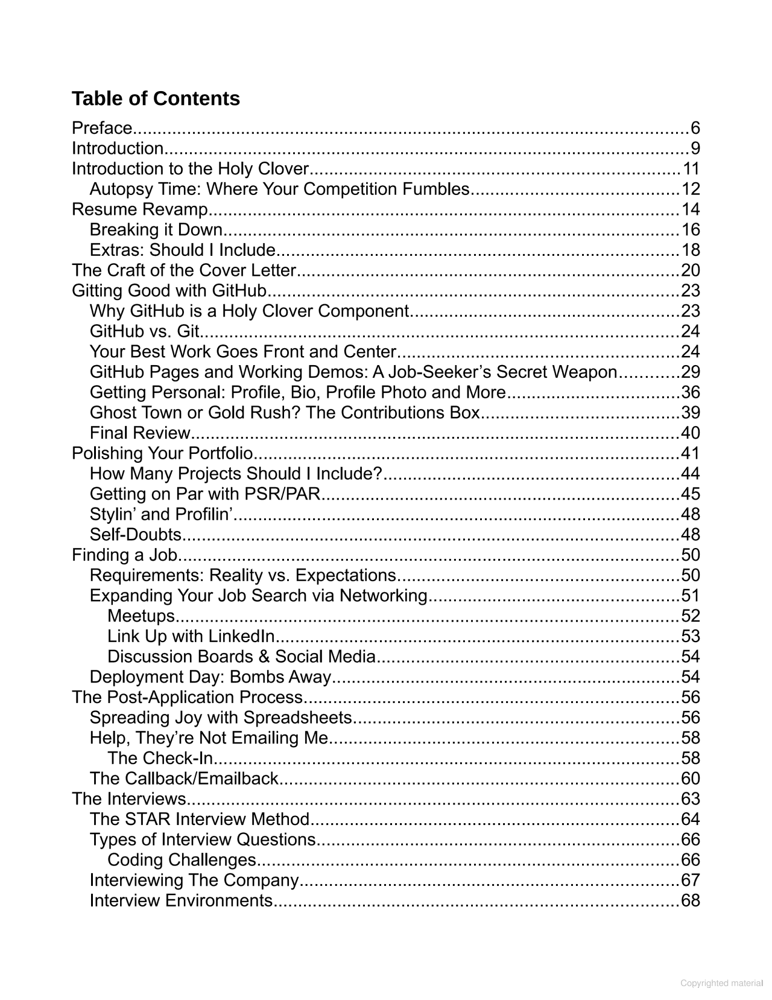

Loading...
Loading...

Loading...
Loading...
|
Loading...
Loading...
Loading...
Loading...
| Pages displayed by permission of RealToughMedia. |
|

| Share | Copy | |
| Embed | Copy |
| Command | Keyboard shortcut | |
| Previous page | ← or K | |
| Next page | → or J | |
| Scroll up | ↑ or Page up or Shift Space | |
| Scroll down | ↓ or Page down or Space | |
| Zoom in | + | |
| Zoom out | - |